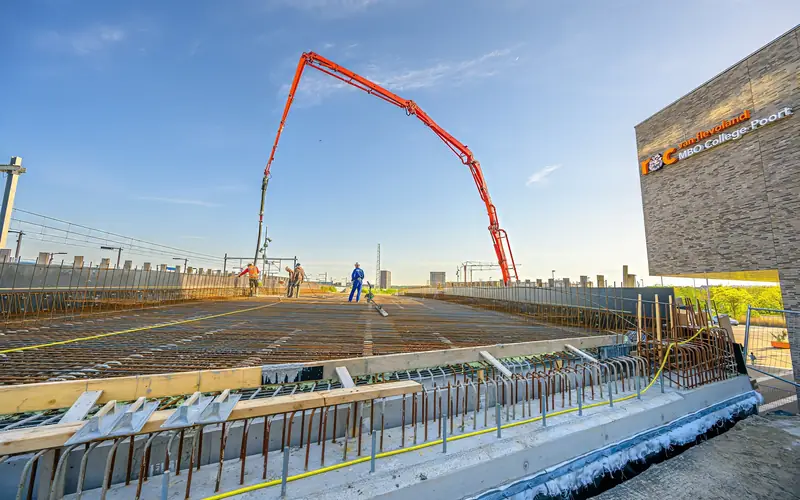

Beton- en waterbouw
Bouwen en onderhouden van kunstwerken en waterbouwkundige werken, in hout, beton en staal.
- Bruggen, kademuren, geluidsschermen en steigers
- (Ondergrondse) betonconstructies
- Onderhoud en restauratie volgens BRL 3201
- Houten bruggen, stalen constructies, metselwerk aan kademuren